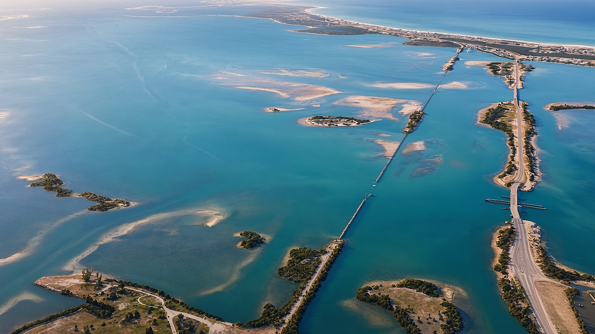
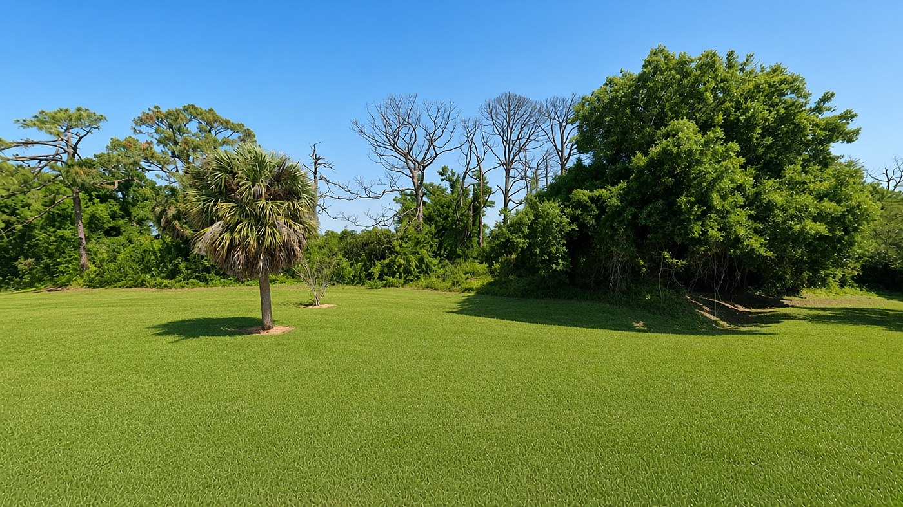

Draft preview for review. Not published. New Page for /explore/rotonda-west/placida-cape-haze/. Goes live 2026-11-27. Images shown from local copies. Rollout batch

Explore · Placida and Cape Haze, Charlotte County
Placida and Cape Haze sit on the quiet southern tip of the Cape Haze peninsula, where the road ends at the causeway to Boca Grande and most homes face the water.
This is the far southwest corner of Charlotte County, past Rotonda West on the way to Gasparilla Island. Placida is a small unincorporated community at the end of the Boca Grande Causeway. Cape Haze is a deed-restricted waterfront subdivision platted in 1953. Together they share ZIP code 33946 and a slower pace than the towns to the north.
The short version
ZIP 33946. Placida, Cape Haze, and nearby areas share one ZIP code.
Deed restrictions. Cape Haze west of State Road 775 has enforced deed restrictions; Cape Haze East has its own association.
Higher values. The Census median owner-reported home value in 33946 is $660,800.
Trail and parks. The 8.5-mile Cape Haze Pioneer Trail and Don Pedro Island State Park are right here.
$660,800
median owner-reported home value, ZIP 33946
46%
of homes built in 2000 or later
47%
of housing units held for seasonal use
8.5 mi
Cape Haze Pioneer Trail
Source: U.S. Census Bureau, ACS 2020-2024, ZIP 33946; Charlotte County, Cape Haze Pioneer Trail.
Location
The end of the road on the Cape Haze peninsula.
Placida is an unincorporated community in Charlotte County, near where County Road 771 becomes County Road 775 and Coral Creek meets Gasparilla Sound. The Cape Haze subdivision lies west of Placida Road, between the highway and the Intracoastal Waterway.
Placida is also where you catch the Boca Grande Causeway, the only road to Gasparilla Island. Our Boca Grande guide covers the toll and island life. To the north, Rotonda and Englewood have the closest grocery stores, restaurants, and services.
Source: Wikipedia, Placida, Florida; Cape Haze Property Owners Association welcome packet.
Deed restrictions
Know the rules before you buy a boat trailer.
Cape Haze was platted in 1953 with deed restrictions that run with the land. In 2011 and 2012, owners west of State Road 775 voted to reinstate a reduced set of restrictions, the state approved them on March 30, 2012, and the Cape Haze Property Owners Association enforces them on every property in that area.
| Topic | Rule |
|---|---|
| Use | Single-family residential use only |
| Boathouses | No enclosed boathouse with walls and a roof over the coves, bays, or basins. A covered lift is allowed. |
| Fences | No wall or fence over six feet tall |
| RVs and trailers | No campers, RVs, or boat trailers parked in view for an extended period, generally more than 7 days |
| Signs | No For Rent signs. For Sale signs no larger than a standard real estate sign. |
| Changes | Amendments need a vote of at least two-thirds of affected owners |
This is a summary. Read the recorded restrictions and ask the association about any planned change. Cape Haze East is governed by the separate Cape Haze East Property Owners Association.
Source: Cape Haze Property Owners Association, Deed Restrictions.

The Cape Haze Pioneer Trail trailhead on Gasparilla Road.
Homes
Waterfront first, with a seasonal market.
Homes in ZIP 33946 are newer and more valuable than Charlotte County as a whole, where the Census median owner-reported value is $328,900. The Census Bureau's 2020-2024 survey puts the median owner-reported home value at $660,800 and the median year built at 1998, with about 46 percent of homes built in 2000 or later. About 47 percent of housing units are held for seasonal or occasional use.
Expect single-family homes on canals, coves, and basins, plus condos and villas near the water. For boaters, the questions are the same as anywhere on this coast: water depth, bridges, the route to open water, and the condition of the seawall and dock. Our waterfront home buying guide explains each one, and the guide to buying land helps if you are looking at a lot to build on.
Source: U.S. Census Bureau, ACS 2020-2024, ZIP 33946; Charlotte County.
Daily life
A nature-first corner of the county.
The Cape Haze Pioneer Trail runs about 8.5 miles along the old Charlotte Harbor and Northern Railroad route beside Gasparilla Road, and Don Pedro Island State Park keeps a 100-acre land base on the peninsula with a kayak launch, fishing dock, and trails. The island itself is reachable only by private boat.
Trail
About 8.5 miles, managed by Charlotte County. First phase opened November 20, 1999.
Trailhead
1688 Gasparilla Road
State park
A 1-mile beach reachable by boat, plus a land base for paddlers and anglers.
Fee
$3 per vehicle
Island
Beaches and the 1890 Port Boca Grande Lighthouse, across the causeway.
Florida State Parks reported in October 2026 that the dock at Don Pedro Island State Park's land base is closed. Check the park's page before you go.
Source: Charlotte County; Florida State Parks, Don Pedro Island.
Schools
Charlotte County schools that serve the west county.
West Charlotte County students attend schools in Rotonda and Englewood. Vineland Elementary, L.A. Ainger Middle, and Lemon Bay High School all earned A grades from the Florida Department of Education for 2025-26. Confirm the assigned school for each address with Charlotte County Public Schools.
Source: Florida Department of Education, 2025-26 School Grades.
Comparing the west county? See Rotonda West, Englewood, and South Gulf Cove.
FAQs
Where is Placida, Florida?
Placida is an unincorporated community in Charlotte County, near where County Road 771 becomes County Road 775 and Coral Creek meets Gasparilla Sound. It is the mainland end of the Boca Grande Causeway to Gasparilla Island. Its ZIP code is 33946.
Is Cape Haze deed restricted?
Yes, west of State Road 775. Owners in Cape Haze west of 775 voted to reinstate deed restrictions, approved by the state on March 30, 2012, and the Cape Haze Property Owners Association enforces them. Cape Haze East has its own, separate property owners association.
What can't you do under the Cape Haze deed restrictions?
Among other rules, the restrictions allow single-family residential use only, bar enclosed boathouses over the coves and basins, cap walls and fences at six feet, and limit parking campers, RVs, and boat trailers in view for more than about seven days.
How much are homes in Placida and Cape Haze?
In ZIP 33946, the Census Bureau's 2020-2024 survey puts the median owner-reported home value at $660,800. Waterfront location and boat access drive prices, so compare sales on the same water.
What is the Cape Haze Pioneer Trail?
It is a paved Charlotte County trail of about 8.5 miles that follows the old Charlotte Harbor and Northern Railroad route alongside County Road 771, Gasparilla Road. Its first phase opened on November 20, 1999.
Can you drive to Don Pedro Island State Park?
Only to its land base. The park's 100-acre land base on the Cape Haze peninsula, at 8450 Placida Road, has a kayak launch, fishing dock, and trails. The island itself, with a 1-mile beach, is reachable only by private boat.
Weighing the move?
Start with our straight answer to Is Punta Gorda a good place to live? It covers the climate, storms and insurance, schools, healthcare, airports, beaches, and every neighborhood guide in one place.
Thinking about Placida or Cape Haze?
We will walk the water with you, read the deed restrictions together, and compare these homes with Rotonda and Boca Grande. Call or text The Helgemo Team at (941) 770-2275.
The office is at 320 Cross Street, Punta Gorda, Florida 33950. You can also meet Brian Helgemo or read more about the team.
Sources: U.S. Census Bureau, ACS 2020-2024, ZIP 33946; Cape Haze Property Owners Association, Deed Restrictions; CHPOA welcome packet; Charlotte County, Cape Haze Pioneer Trail Park; Florida State Parks, Don Pedro Island State Park; Florida Department of Education, 2025-26 School Grades; Wikipedia, Placida, Florida. Checked November 20, 2026.